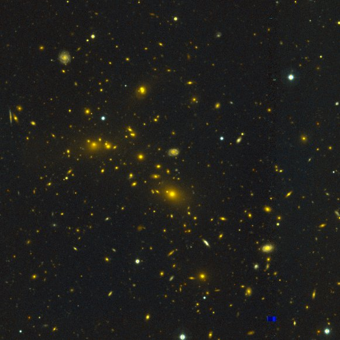
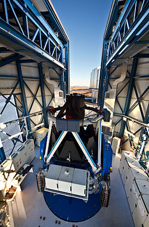

-
Atacama Cosmology Telescope (ACT)
- ACT is a 6-meter, millimeter-band telescope located
in northern Chile. Its main objectives are to study the CMB in small
scales (~1 arcmin) and clusters of galaxies through the
Sunyaev-Zel'dovich Effect. The picture on the right shows the
spectacular El Gordo, a merging galaxy cluster at z=0.87 discovered
by ACT.
|

|
-
Canadian Cluster Comparison Project (CCCP)
- The CCCP is a multi-wavelength study of about 50
massive galaxy clusters, mainly through weak gravitational lensing
and X-ray observations. The major aim is to understand what
impact do different astrophysical processes have on clusters and how
is this reflected in different scaling relations. Shown in the right
is Abell 1914, one of the clusters in the sample.
|

|
-
Kilo-Degree Survey (KiDS)
- KiDS is one of the public surveys that is being
observed with the VLT Survey Telescope. When completed, it will have
observed 1,500 square degrees in two areas in the sky in the u, g, r,
i bands with high image quality. The main science driver of the
survey is the study of cosmic shear, meaning gravitational lensing by
large scale structure. To the right, a picture of the 2.2m VST
which is located in Chile.
|

|